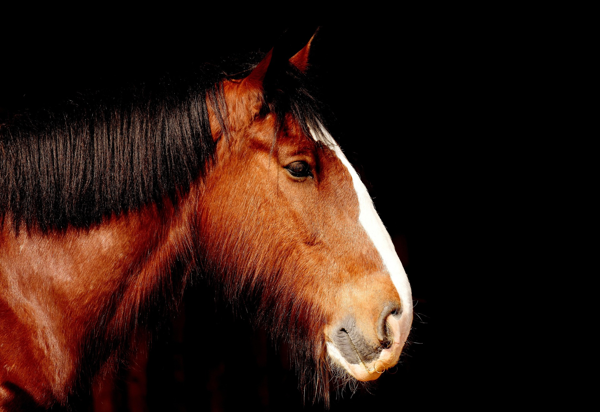

<html>
<head>
    <title>Menú Desplegable</title>
<body 
background="cas.jpg">
    <style>
          
    body { font-family: Arial, sans-serif; }
    
    .menu { margin: 0; padding: 0; list-style: none; }
    .menu li { float: left; position: relative; width: 150px; background-color: #333; }
    .menu li a { display: block; padding: 15px; color: white; text-decoration: none; text-align: center; }
    .menu li a:hover { background-color: #555; }

    .submenu { display: none; position: absolute; top: 100%; left: 0; margin: 0; padding: 0; list-style: none; }
    .submenu li { background-color: #444; width: 100%; }
    
    .menu li:hover > .submenu { display: block; }
 
    </style>
</head>
</html>
<body>

    <ul class="menu">
        <li><a href="#">Peces</a>
            <ul class="submenu">
                <li><a href="https://www.fishipedia.es/pez/betta-splendens">Pez Betta</a></li>
                <li><a href="https://www.fishipedia.es/pez/holacanthus-ciliaris">ángel reina</a></li>
                <li><a href="https://www.fishipedia.es/pez/hyphessobrycon-eques">Tetra serpae</a></li>
                <li><a href="https://www.tomscatch.com/es/especies-de-peces/marlin-blanco-11">Marlin Blanco</a></li>
                <li><a href="https://www.fishipedia.es/pez/hyphessobrycon-erythrostigma">Megalamphodus</a></li>
            </ul>
         </li>
        <li>
            <a href="#">Mamiferos</a>
            <ul class="submenu">
                <li><a href="gorila.html">Gorila</a></li>
                <li><a href="lemur.html">Lemur</a></li>
                <li><a href="caballo.html">Caballo</a></li>
                <li><a href="armadillo.html">Armadillo</a></li>
                <li><a href="reno.html">Reno</a></li>
            </ul>
        </li>
        <li><a href="#">Anfibios</a>
            <ul class="submenu">
                <li><a href="anfi2.html">Anfibios</a></li>
            </ul>
        </li>
        <li><a href="#">Aves</a>
            <ul class="submenu">
                <li><a href="https://www.nationalgeographicla.com/animales/loros">Loro</a></li>
                <li><a href="https://www.faunia.es/planea-tu-visita/animales/tucan-toco">Tucan Toco</a></li>
                <li><a href="https://deanimalia.com/selvaaguilafilipina.html">Águila Monera</a></li>
                <li><a href="https://aveschile.cl/picaflor-2/">Colibrí de Arica</a></li>
                <li><a href="https://laberintoenextincion.blogspot.com/2009/10/maca-tobiano.html">Macá Tobiano</a></li>
            </ul>
         </li>
         <li><a href="#">Reptiles</a>
        <ul class="submenu">
                <li><a href="coco.html">Cocodrilo De Agua Salada</a></li>
                <li><a href="torta.html">Tortuga gigante de galapagos</a></li>
                <li><a href="komodo.html">Dragon De Komodo</a></li>
                <li><a href="cama.html">Camaleon</a></li>
                <li><a href="ser.html">Serpiente De Cascabel</a></li>
            </ul>
         </li>
         <li><a href="index.html">Menu Principal</a>
         </li>
    </ul>

</body>
</html>

<html>
<head>
<title>Caballo</title>
</head>
<body background="pradera.jpg" text="white">

<center><h2><marquee bgcolor="blue">EL CABALLO</marquee></h2></center>

<center></center>

<center><h4>El caballo es un animal mamífero herbívoro que habita principalmente en praderas, estepas y llanuras abiertas, lugaresdonde hay suficiente vegetación para alimentarse y espacio para correr. Aunque originalmente vivía en estado salvaje, hoy en día la mayoría de los caballos son domesticados por los humanos y viven en ranchos, granjas o establos.
Los caballos son animales sociales que prefieren vivir en grupos llamados manadas. Dentro de estas manadas suele haber una organización donde algunos caballos lideran y otros siguen al grupo para mantenerse protegidos. Pasan gran parte del día pastoreando, es decir, comiendo hierba, y también caminando o descansando.
Además, los caballos son animales muy activos y resistentes, capaces de recorrer grandes distancias. Desde hace miles de años han sido muy importantes para el ser humano, ya que se han utilizado para transporte, trabajo agrícola, guerra, deportes y recreación.</h4></center>

<center><h3>Características</h3></center>
<ol type="1" align="left">
<li>Es un mamífero herbívoro que se alimenta principalmente de pasto y plantas.</li>
<li>Puede correr a gran velocidad, alcanzando más de 60 km/h en algunos casos.</li>
<li>Los caballos pueden dormir tanto de pie como acostados.</li>
<li>Suelen comunicarse mediante sonidos, movimientos de las orejas y del cuerpo.</li>
<li>Puede vivir aproximadamente entre 25 y 30 años, dependiendo de la raza y los cuidados.</li>
</ol>
</body>
</html>
